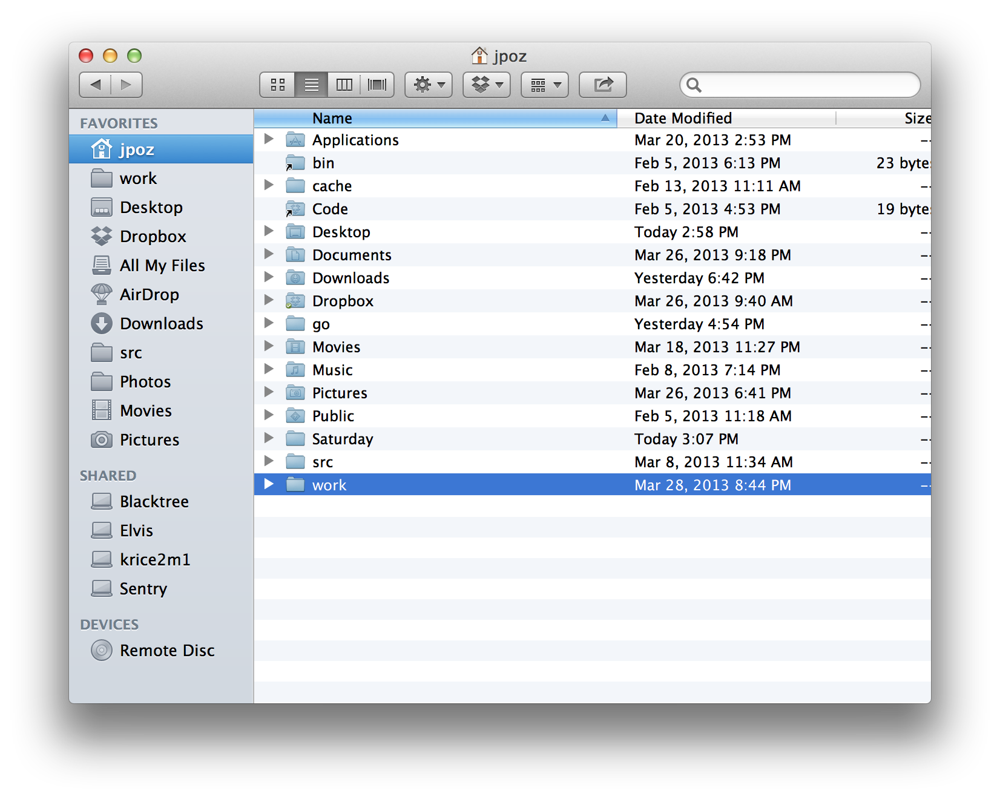

Terminal App
 | /Applications/Utilities/Terminal.app |
Welcome to Saturday Academy
We are Collin Ruffenach & James Pozdena
Let's go around an introduce ourselves and tell a little bit about what lead you to sign up for this class.
We are going to need a few tools to help you start programming.
A lot of programming is editing text. There are hundreds of different text editing applications specifically made to write software with. We are going to use Textmate 2.0 which was recently open sourced.
Where we'll keep links / cheatsheets / code snippets / whatever
What do you think programming is?
Let's start with True and False.
We can do arithmetic with logic
| TRUE | AND | TRUE | = | TRUE |
| TRUE | AND | FALSE | = | FALSE |
| FALSE | AND | FALSE | = | FALSE |
We can do arithmatic with logic
| TRUE | OR | TRUE | = | TRUE |
| TRUE | OR | FALSE | = | TRUE |
| FALSE | OR | FALSE | = | FALSE |
TRUE and FALSE were so useful they become a regular type of data. What are some other types of data?
In general there are 3 data types in any programming language.
| Boolean | (TRUE and FALSE) |
| Number | (1.432 or -36 or π) |
| Strings | ('A' or 'Collin' or 'Hello World') |
This is a Gist. Gists are a nice way to share/display code. We will be talking more about GitHub in a minute.
Now that we have data types we need to have something that let's us do some kinda operation using those types. We call these functions.
Let's make a function that will add 2 numbers together
Terminal App
| /Applications/Utilities/Terminal.app |
Bash is an OS for Nerds
|  |
Bash commands
ls | List files | |
pwd | Present working directory | |
cd | Change Directory | |
mkdir | Make Directory | |
whoami | Which user are you? | |
ruby | Run a program! |
cd Change Directory
cd Pictures | Move into Pictures directory | |
cd Music | Move into Music directory | |
cd ../ | Move into the parent directory | |
cd ~ | Move into the home directory |
Hands On time!
ls &
pwdcd Documentsmkdir Saturdaycd Saturday

"Sinatra is a DSL for quickly creating web applications in Ruby with minimal effort"
Today we are going to use Sinatra to make a very simple web application.
For today's class we are going to download a basic project from Github
Git is a version control technology.
Version control technologies are able to keep an ongoing record of changes to a group of files.
There are many different version control technologies. Subversion and Perforce are examples of some other popular version control systems. However in the last few years Git has emerged as the most popular of these, spurred largely by GitHub
GitHub is a place where developers can "Build Software better, together". Github leverages the Git technology, with some of their own additions to provide a social construct for code to exist in. Although GitHub focuses on software, Git can be used with any kind of data.
Today we are going to get some software from GitHub that we are going to work with throughout our class today. Copy the following line and paste it into your bash shell.
What did that do? Let's examing the output
GitHub is an incredible resource to look at, learn from and contribute to real code bases around the world. It also acts as a great Resumé for many engineering jobs. Signing up for an account is free and I encourage you guys to do it.
When the internet was first arising most of it was static webpages. Just basic HTML. HTML was a mechanism to communicate information to users. Maybe to communicate a line from Shakespeare
To be or not to be that is the question.
Pretty soon though people started to add style to these static pages. Maybe something like:
To be or not to be that is the question.
For a while this was done by putting these style elements right in with the information your were communicating.
To be or not to be that is the question.
In HTML is
People started styling their pages in so many ways, people wanted to be able to make a division between the documents that contained the data they wanted to share and the style they wanted applied to that content.
To solve this CSS was created and is supported by every browser. Cascading Style Sheets (CSS) is code you can write to style your HTML content. With CSS you can style things like
So how do we define these styles? First let's talk about what kind of style rules you can make. Some of the most common things to apply styles to are HTML tags and classes for HTML tags. Let's look at an example.
What if I want to make styles but not apply them for all types of a certain HTML tag? Well we can use classes for that. Any HTML tag can be assigned a class, and styles for that class can be set.
Color are commonly represented on the web in hexadecimal format. A great site to help picking colors in hexacdeciaml format is colorpicker.com
HTTP/1.1 is a defined collection of methods that are assumed to be shared sematics for clients and servers.
Are an agreed upon way to ask for and send data around the internet. HTTP methods dictate HOW to send and recieve data but do not in any way influence the format or language of the data being passed around
With HTTP Methods you can